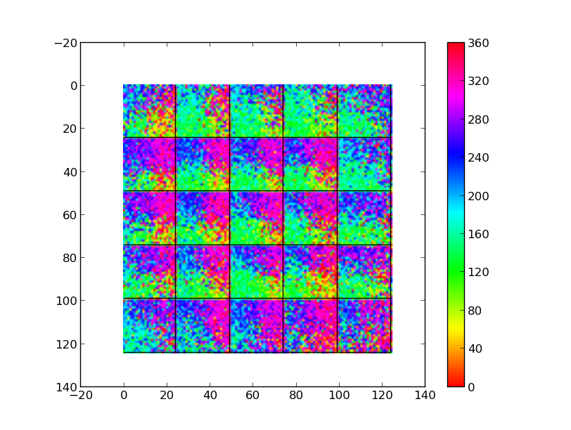
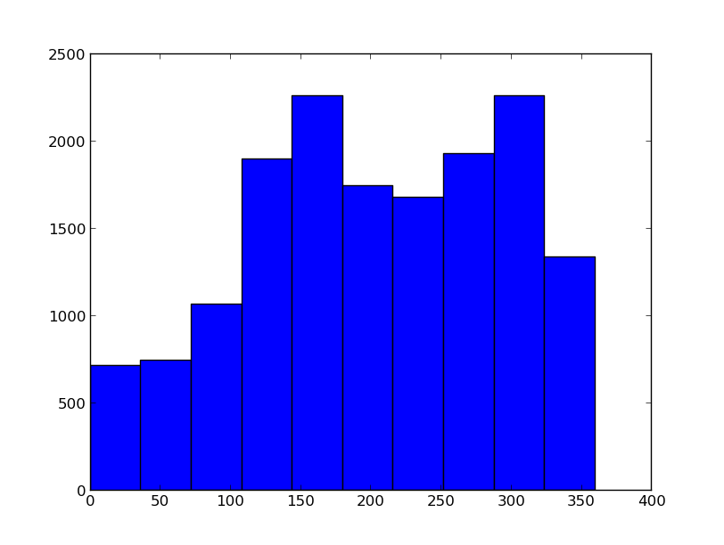

For the paper: Kremer Y, Leger JF, Goodman D, Brette R, Bourdieu L (2011) Late emergence of the vibrissa direction selectivity map in the rat barrel cortex. J Neurosci 31:10689-700 Abstract In the neocortex, neuronal selectivities for multiple sensorimotor modalities are often distributed in topographical maps thought to emerge during a restricted period in early postnatal development. Rodent barrel cortex contains a somatotopic map for vibrissa identity, but the existence of maps representing other tactile features has not been clearly demonstrated. We addressed the issue of the existence in the rat cortex of an intrabarrel map for vibrissa movement direction using in vivo two-photon imaging. We discovered that the emergence of a direction map in rat barrel cortex occurs long after all known critical periods in the somatosensory system. This map is remarkably specific, taking a pinwheel-like form centered near the barrel center and aligned to the barrel cortex somatotopy. We suggest that this map may arise from intracortical mechanisms and demonstrate by simulation that the combination of spike-timing-dependent plasticity at synapses between layer 4 and layer 2/3 and realistic pad stimulation is sufficient to produce such a map. Its late emergence long after other classical maps suggests that experience-dependent map formation and refinement continue throughout adult life. Brian simulator models are available at this web page: http://briansimulator.org/docs/examples-frompapers_Kremer_et_al_2011.html The simulation creates a selectivity map similar to Fig. 7c middle:  and a histogram of the angles present:  This simulation requires Brian which can be downloaded and installed from the instructions available at http://www.briansimulator.org/ For support on installing and using Brian simulations there is a support group at https://groups.google.com/group/briansupport.